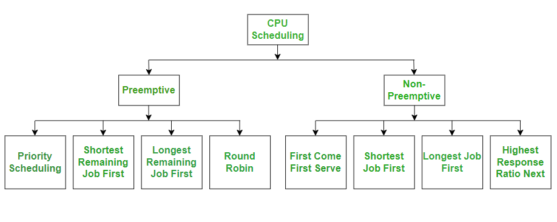

Binary Search Tree Implementation
This project was developed for my Data Structures course. It focused on implementing a Binary Search Tree and applying operations such as insertion, deletion, searching, and traversal.

Here are some academic projects that helped me strengthen my programming knowledge and practical understanding of computer science concepts.
This project was developed for my Data Structures course. It focused on implementing a Binary Search Tree and applying operations such as insertion, deletion, searching, and traversal.
This project was completed for my Operating Systems course. It explored CPU scheduling algorithms such as FIFO and Round Robin.
